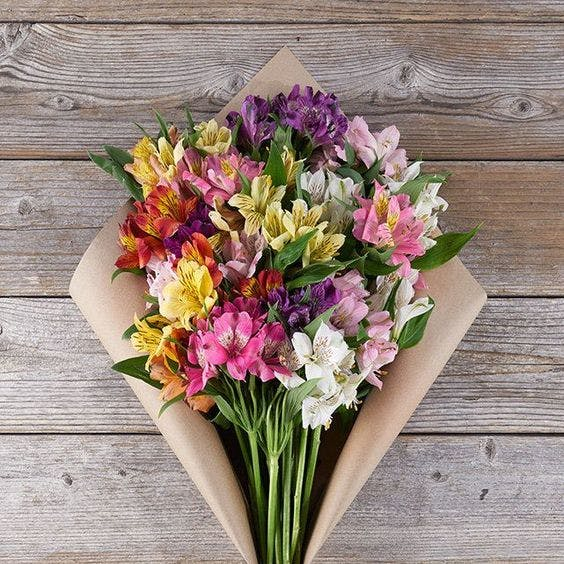

Alstroemeria flower or lily: It is one of the most loved and beautiful flower that can be given and taken, also known as Peruvian lily or princess lily, so when looking for a flower to express love for a friend or partner, choose Alstroemeria flower.
Alstroemeria is a small, lush-leaved plant that produces a wealth of vibrant blooms from late spring to early fall. Not only are these flowers embellished with contrasting shades and grainy whiskers, they have a vase life of up to 2 years. For up to two weeks, these happy plants thrive in partly sunny conditions and do well in garden beds, borders, or containers.